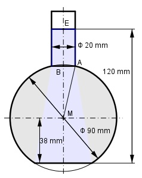

Aufgabe 391 Wie groß ist die Wassermenge V in dem Stehkolben?

V = VKugel - VKugelabschnitt1 - VKugelabschnitt2 + + VZylinder d3 * л 903 mm3 * л VKugel = -------- = -------------- = 6 6 = 381 510 mm3 = 381,5 cm3 rKugel = d/2 = 90 cm/2 = 45 cm hKA1 = rKugel - 38 cm = 45 cm - 38 cm = 7 cm л VKugelabschnitt1 = --- * hKA12 * (3 * rKugel - hKA1) 3 л VKugelabschnitt1 = --- * 72 * (3 * 45 - 7) mm3 = 3 = 6565 mm3 = 6,565 cm3 Satz von Pythagoras im Dreieck MAB: MA = rKugel = 45 mm AB = 20 mm/2 = 10 mm = rZylinder MA2 = AB2 + MB2 | -AB2 MB2 = MA2 - AB2 = 452 mm2 - 102 mm2 = 1925 mm2 |√ MB = 43,9 mm hKA2 = rKugel - 43,9 mm = 45 mm - 43,9 mm = 1,1 mm л VKugelabschnitt2 = --- * hKA22 * (3 * rKugel - hKA2) 3 л VKugelabschnitt2 = --- * 1,12 * (3 * 45 - 1,1) mm3 = 3 = 169,6 mm3 = 0,17 cm3 hZylinder = 120 mm - 38 mm - 43,9 mm = 38,1 mm VZylinder = л * rZylinder2 * hZylinder = = л * 102 mm2 * 38,1 mm = 11 963 mm3 VZylinder = 11,96 cm3 V = 381,5 cm3 - 6,565 cm3 - 0,17 cm3 + 11,96 cm3 = 386,7 cm3